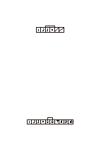
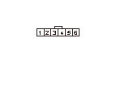
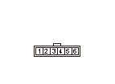
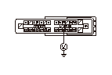

キー インタロック システム回路故障診断
キー インタロック ソレノイドの作動点検
1-1
イグニッション スイッチをACCESSORY（
I
）にする
1-2
ステアリング ロックAssy.からキー スイッチ カプラの接続を外す
1-3
キーがOFFに回るか点検する
◆ OFFまで回るか
YES
-
ステップ
2
へ進む
NO
-
キー インタロック ソレノイドの不良、
ステアリング ロックAssy.を交換する
KEYSOL回路の短絡点検
2-1
イグニッション スイッチをOFFにする
2-2
セレクト レバーをP以外のポジションにする
2-3
キー スイッチ カプラのNo.3端子(スマート キー システム非装備車）またはNo.10端子（スマート キー システム装備車）とボディ アース間の導通を点検する
◆ 導通があるか
YES
-
キー インタロック ソレノイドとMICU間のKEYSOLコードの短絡
NO
-
ステップ
3
へ進む

パーキング ピン スイッチとMICU間のコードの短絡点検
3-1
Sモード スイッチ/シフト ポジション インジケータ パネル ライト/パーキング ピン スイッチ ハーネス カプラの接続を外す
3-2
Sモード スイッチ/シフト ポジション インジケータ パネル ライト/パーキング ピン スイッチ ハーネス カプラのNo.1端子とボディ アース間の導通を点検する
◆ 導通があるか
YES
-
Sモード スイッチ/シフト ポジション インジケータ パネル ライト/パーキング ピン スイッチ ハーネス カプラのNo.1端子とMICU（ヒューズ ボックス16Pカプラ経由）間のコードの短絡
NO
-
ステップ
4
へ進む

パーキング ピン スイッチのON故障点検
4-1
セレクト レバーをPポジションにしたときとPポジション以外のときのSモード スイッチ/シフト ポジション インジケータ パネル ライト/パーキング ピン スイッチ ハーネス カプラのNo.1とNo.2端子間の導通を点検する
◆ Pポジションのとき導通がなく、Pポジション以外のときに導通があるか
YES
-
ステップ
5
へ進む
NO
-
パーキング ピン スイッチを交換する

シフト ポジション センサとMICU間のATPPコードの断線または短絡点検
5-1
ヒューズ ボックスからカプラB（36P）の接続を外す
5-2
イグニッション スイッチをON（
II
）にする
5-3
ヒューズ ボックス カプラB（36P）のNo.31端子とボディ アース間の電圧を確認する
◆ 電圧があるか
YES
-
新品のPGM-FI ECUに交換して
再点検する
NO
-
シフト ポジション センサとMICU（ヒューズ ボックス カプラB（36P）経由）間のATPPコードの断線または短絡、またはシフト ポジション センサATPP回路の故障
